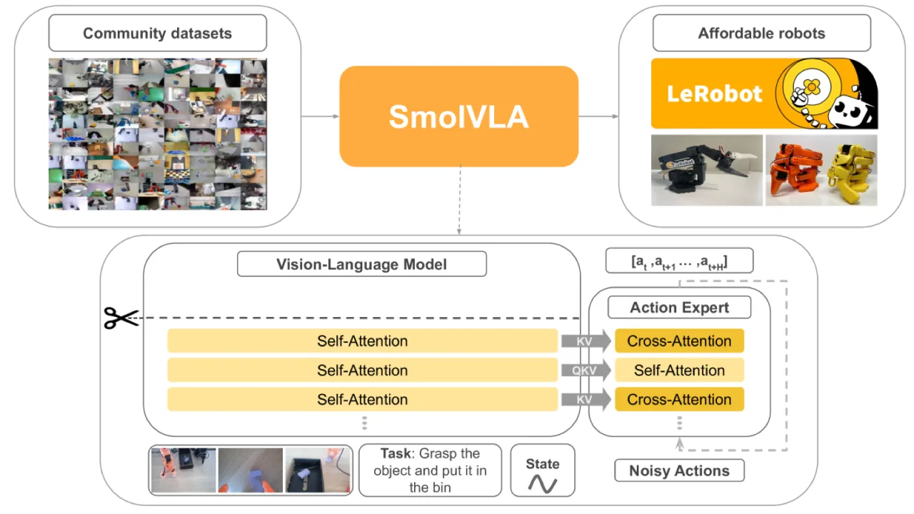
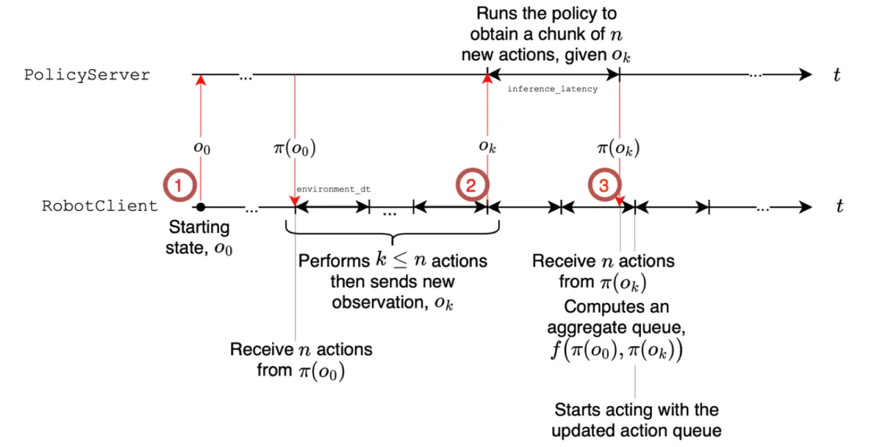
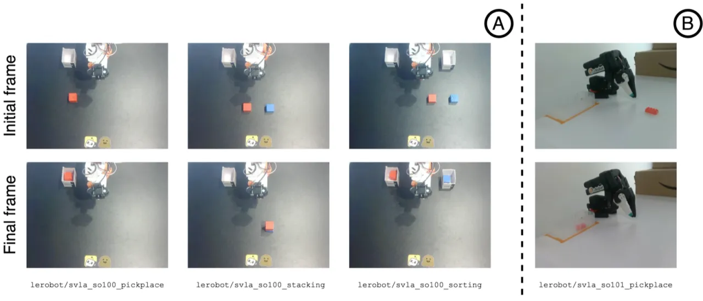
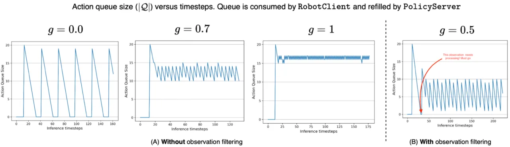

SmolVLA 是一个仅 0.45B 参数的紧凑型视觉-语言-动作模型，可在单张 GPU 上训练、在 CPU 上部署。通过 layer skipping、flow matching action expert 与异步推理三项核心设计，SmolVLA 在 LIBERO 仿真基准上以 87.3% 的成功率超越 10 倍体量的 π₀，并在真实机器人任务中展现出更快的任务完成速度。
当前的视觉-语言-动作（VLA）模型通常拥有数十亿参数，导致训练成本极高、难以在真实场景中部署。这一"规模崇拜"使得机器人学习研究对大多数团队而言门槛极高。
"existing VLA systems are typically massive–often with billions of parameters–leading to high training costs and limited real-world deployability."
SmolVLA 的核心主张是：性能优秀的 VLA 不必庞大。通过精心的架构设计和利用社区贡献的开放数据集，0.45B 参数的 SmolVLA 在多个基准上超越了 3B 参数的 π₀，同时大幅降低了训练与部署的资源门槛。

SmolVLA 由三个核心组件构成：（1）通过 layer skipping 压缩的 SmolVLM-2 视觉语言骨干；（2）基于 flow matching 的 Action Expert；（3）将感知与执行解耦的异步推理系统。
SmolVLA 直接复用预训练的 SmolVLM-2（含 SigLIP 视觉编码器），但仅保留 LLM 的前 16 层（共 32 层），舍弃后半部分。实验表明，"skipping layers from a large VLM yields better results than downsizing"：layer skipping 在 LIBERO 上达到 78.5%，而重新训练的缩小版 VLM 仅 75.8%。视觉 token 通过 pixel shuffling 压缩至每帧仅 64 个，进一步降低序列长度。
Action Expert 是一个约 100M 参数的独立模块，采用交错排列的 cross-attention（CA）和 self-attention（SA）层。CA 从 VLM 输出的视觉/语言 token 中提取语义条件，SA 在动作序列内部建模时序依赖。训练使用 flow matching 目标，以 chunk size n 预测一段连续动作。消融实验证明：

传统同步推理中，机器人在等待模型推理时处于静止状态，严重限制控制频率。SmolVLA 引入 asynchronous inference：PolicyServer 持续运行 VLA 推理并将动作块写入共享队列，RobotClient 持续从队列取出动作执行，两者完全并行。当队列长度超过阈值 g 时，重新触发感知更新。该设计不仅提升了速度，还允许将模型部署在远程 GPU 服务器，本体侧只需 CPU。
SmolVLA 使用来自 Hugging Face Hub 的 481 个社区数据集进行预训练，经过 embodiment 类型、episode 数量、数据质量、帧覆盖度等过滤后，最终保留约 22,900 条轨迹、10.6M 帧。该规模"比其他 SOTA VLA 方法小至少一个数量级"，所有数据均公开可得，无专有数据。预训练使用 4 张 GPU，总计约 30,000 GPU 小时。
在 LIBERO 仿真基准、Meta-World 多任务基准和真实机器人（SO100 / SO101）上与 Diffusion Policy、Octo、OpenVLA、π₀ 等基线对比。
| 方法 | 参数量 | Spatial | Object | Goal | Long | 平均 |
|---|---|---|---|---|---|---|
| Diffusion Policy | — | 78.3% | 92.5% | 68.3% | 50.5% | 72.4% |
| Octo | 0.09B | 78.9% | 85.7% | 84.6% | 51.1% | 75.1% |
| OpenVLA | 7B | 84.7% | 88.4% | 79.2% | 53.7% | 76.5% |
| π₀ (pretrained) | 3.3B | 90% | 86% | 95% | 73% | 86.0% |
| SmolVLA | 0.45B | 90% | 96% | 92% | 71% | 87.3% |
SmolVLA 以 0.45B 参数超越了 3.3B 参数的 π₀（pretrained），平均成功率 87.3% vs 86.0%。
| 方法 | 参数量 | Easy | Medium | Hard | Very Hard | 平均 |
|---|---|---|---|---|---|---|
| Diffusion Policy | — | 23.1% | 10.7% | 1.9% | 6.1% | 10.5% |
| TinyVLA | — | 77.6% | 21.5% | 11.4% | 15.8% | 31.6% |
| π₀ (pretrained) | 3.5B | 71.8% | 48.2% | 41.7% | 30.0% | 47.9% |
| SmolVLA | 0.45B | 82.5% | 41.8% | 45.0% | 60.0% | 57.3% |
| 方法 | Pick-Place | Stacking | Sorting | 平均 |
|---|---|---|---|---|
| ACT (single-task) | 70% | 50% | 25% | 48.3% |
| π₀ (multi-task) | 100% | 40% | 45% | 61.7% |
| SmolVLA (multi-task) | 75% | 90% | 70% | 78.3% |
| 方法 | In-Distribution | Out-of-Distribution |
|---|---|---|
| ACT | 70% | 40% |
| SmolVLA | 90% | 50% |


关键设计选择的消融（均在 LIBERO 上测试）：
预训练数据集约 22,900 条轨迹（10.6M 帧），"at least one order of magnitude smaller than other state-of-the-art" VLA 方案。全部数据来自 SO100 单一 embodiment，泛化到不同机器人形态时需要额外 fine-tuning，且跨 embodiment 迁移能力尚未充分验证。
在 LIBERO-Long（需要更长规划视野）上，SmolVLA 达到 71%，低于其在 Object（96%）和 Spatial（90%）子集的表现，表明对长时序、多步骤任务的建模能力仍有提升空间。
作者指出，VLM 骨干 SmolVLM-2 "pretrained mainly on document reading and OCR tasks"，其视觉语义理解与机器人操控场景存在领域差距，这可能限制其对操作场景的细粒度理解（如物体姿态、接触关系）。
异步推理系统需要在 PolicyServer 和 RobotClient 之间维护共享动作队列和状态同步，引入了额外的工程复杂性。队列阈值超参数 g 的选择对实际性能有影响，需针对不同任务调优。